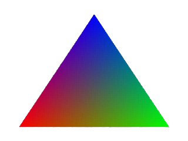

<div class="rowArticleContainer">
    <div class="rowArticleTexts">
      <div class="rowArticleTitle">
        <a>
          <h1>Rasterization Algorithms — Computer Graphics</h1>
        </a>
      </div>
      <div class="rowArticleDescription">
          <a>
            <h2>The most useful maps distort what they depict and leave out tons of possible information</h2>
          </a>
        </div>
      <div class="rowArticleInformation">
        <div class="rowtArticleAuthor">
          <a>
            <h2>Thiago Luiz Full-stack developer</h2>
          </a>
        </div>
        <div class="rowArticleStatus">
          <span class="rowArticleDate">20 May</span>
          <span class="rowArticleTime"> 13 min</span>
          <span class="rowArticleIcon" style="color: #757575; font-size: .6rem;">
            <i class="fas fa-star"></i>
          </span>
        </div>
      </div>
    </div>
    <a class="rowArticleBanner">
        
      </a>
  </div>
